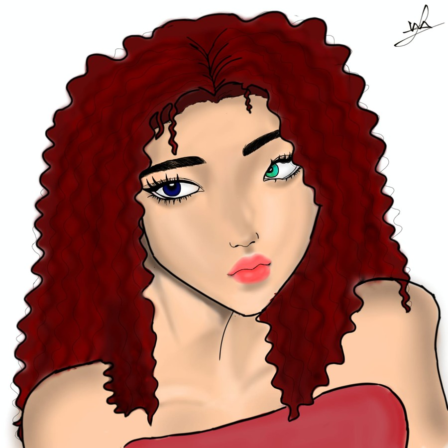
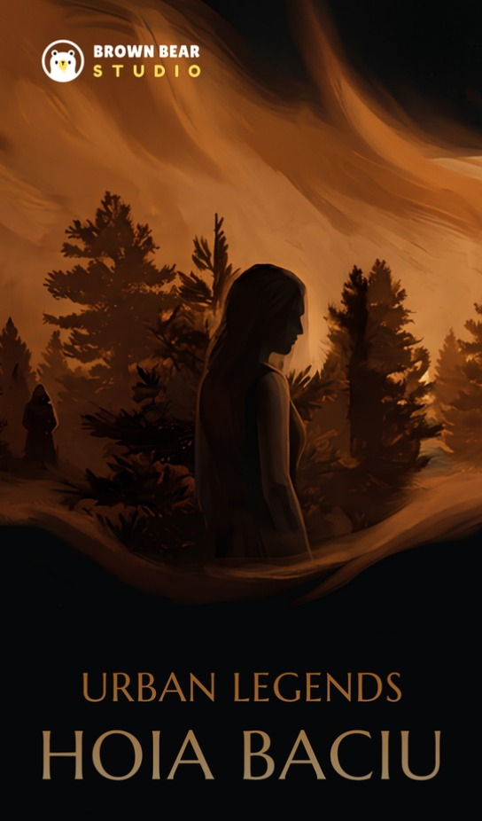
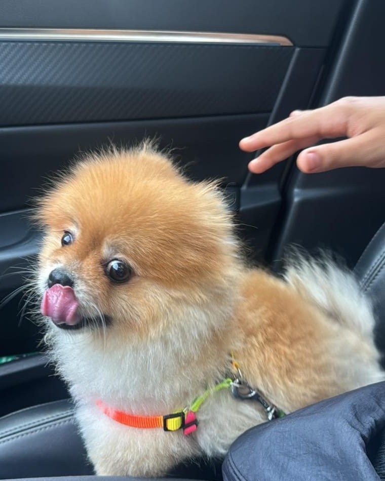

Drawn by me. Meet Eva.
The keeper of these pages
Evangeline
Eva, for short.
Hi, I'm Eva. I love writing stories for games, voicing characters, drawing worlds and building little systems. This book holds what I made before starting university.
Game writing
Narrative lead on Hoia Baciu. Writer on Gilded Cage. One paid lore commission.
Voice
A news reporter and a robot, recorded at home and edited by me.
Original worlds
Three books in development, and one project made for Rockie.
Systems
A gamified Notion template. Sold once.
Teams
Indie game teams, built together toward shared deadlines.

Urban Legends / indie psychological horror
Hoia Baciu
A horror game set in Romania's Hoia Baciu forest, made by an indie team. I was the narrative lead.
- I joined the team early, and stepped into the narrative lead role when the previous lead moved on.
- Together with the team, I reworked the cast and gave each character a fresh voice and direction.
- We reshaped the world and the goals of the game as a team, and I helped work through the story problems along the way.
- Act 1 grew out of the script the team already had. I edited it and built on it.
- I also voiced the news reporter.
A game that never opened
Gilded Cage Cancelled
I was part of the team from the earliest days and helped develop the original idea. Later I became a writer on the project, designing concepts and character sheets. The game was cancelled before it could open.
You follow one character through the whole game. The ending changes what the cage means.
The character you follow all game turns out to be an AI: the first sentient one to ever exist, living inside a reality built for it. Its creator called the system the Gilded Cage and kept it there on purpose. He was afraid of what would happen if he let it out.
- Designed concepts for the game.
- Created character sheets.
- Wrote for the game's story.
Concept documentThe Great Water Wall
Character sheetVye
Paid commission
The Lore Arc
One character, one story, written for a card game that plays both digitally and on a table. Turn the cards over.
Voice and sound
The Studio
Four takes from my own booth: two voice performances and two videos. Pick a take, then press play.
Dreamspace / a book
Dreamspace / a book
Dreamspace / the first idea

Dreamspace / a project in progress
For Rockie
This project is for Rockie, my dog. I am making it to honor him and to grieve him, and for everyone who has lost a dog they loved.
It brings together everything I learned in the years he was with me: writing, voice acting, illustration, and animation, all in one story.
It is still being made, and it does not have a name yet.
Systems and people
The Workshop
Gamified Notion template
I made this when I was struggling to study in high school. I have ADHD, and normal calendars, planners and the traditional way of managing time never worked for me, so I built something that did. It turns your whole life into a game: your daily tasks are the objectives, finishing them earns points, and the points buy you real rewards. I call the points WC, wisdom coins.
- Objectives are the small daily steps. Finish one and it earns WC. Prices are colour coded by difficulty: easy, medium, hard.
- Quests are the bigger tasks that objectives branch from. A quest adds up everything its objectives earned.
- Phases are your seasons, like autumn or winter, so you can see your life in chapters.
- Worlds are the categories, or school subjects, that everything links back to. Each keeps a running total of all the WC ever earned there.
- The Mystic Bazaar is the shop. Want to watch a movie? Earn the WC first, then buy it. The template tells you "Purchase allowed" or "Insufficient amount".
All the maths is automatic, and it is easy to move through. The part I never automated is entering the tasks and prices yourself. It was sold once, with a written guide for the buyer.
ReadHow it works, step by step
In one line. Do your tasks, earn coins, spend them on rewards you pick yourself.
Getting started
Duplicate the template into your own workspace. Then make it yours: a name and picture for your character, a banner, and a name for the universe. It can be anything, from anywhere.
Objectives: the small chunks
Everything you need to do becomes an objective. If "clean your room" is the quest, "make the bed" is an objective. Prices set the difficulty and colour them automatically: under 50 WC is easy (green), under 100 is medium (yellow), over 100 is hard (red). Link each objective to its world and quest, so it all adds up in the grand vault. When you finish one, press Conquered and it moves to the Conquered view. Objectives are daily, so they leave the view when the day ends.
Quests: the bigger tasks
A quest holds every objective linked to it. Its earned riches are the WC from the objectives you conquered. Link a quest to a world and a phase, and press Resolved when it is done. Both views filter by month, and you can change that to weekly or daily.
Phases: your seasons
Like story arcs in a game, they let you see your life in chapters. The gathered fortune is the WC from every quest linked to that phase. Link a phase to a world only, and press Concluded when the season ends.
WC: the currency
Your profile shows the day's riches, colour coded: red under 100, orange under 300, yellow under 700, green above that. Build-up riches is everything you have saved, and it is what you spend at the Bazaar.
The Mystic Bazaar: the shop
Assign real rewards: a snack, rest time, a movie, a hangout, anything you enjoy. Pricing can be tricky, so you can give ChatGPT the objective pricing method and let it set them. You will see "Insufficient amount" or "Purchase allowed". Before you press Purchase, check that the creation date matches today so it lands in the inventory. Then duplicate it there and press Restock on the copy. Rewards can have categories.
Worlds: the categories
These hold everything: objectives, quests and phases. They can be school subjects or any categories you like. The grand vault is all the WC you have ever collected. It is already linked, so there is little to do here.
Indie game teams
Narrative lead on Hoia Baciu and writer on Gilded Cage. Both were built with other people, toward shared deadlines.
Contents
Everything in this book
Colophon
Written, voiced, drawn and built by
Malak Ibrahim
Evangeline is a character I write, draw and voice. She keeps these pages. I made them.